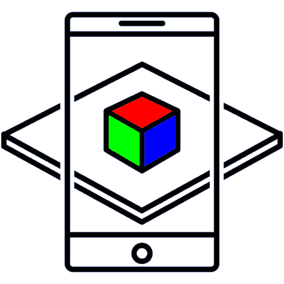

{}
Grupo de Estudos:
Realidade Virtual &
Realidade Aumentada
Esta página foi rabiscada no bloco de notas por Roberto Schmitt (roberto.schmitt@email.com) para uso do grupo de estudos sobre Realidade Virtual e Realidade Aumentada da FADERGS, administrado pelo professor Deivith Cunha. Nenhum direito reservado. Camarão que dorme a onda leva.